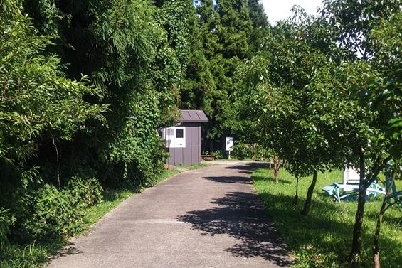
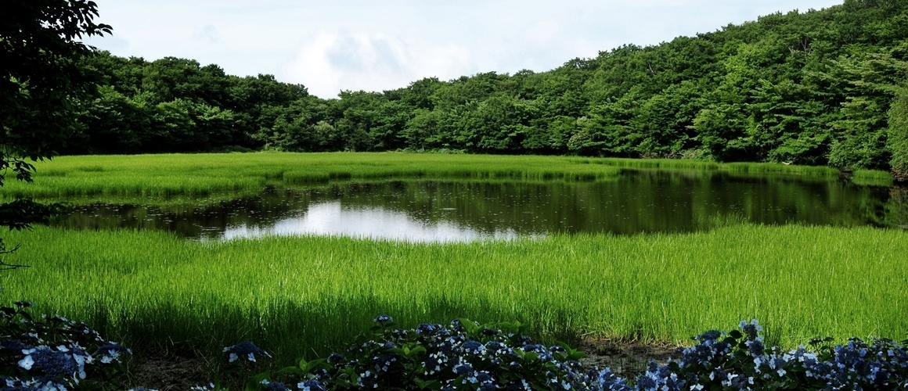
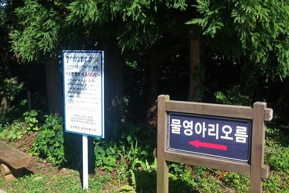

물영아리오름
#제주도#물영아리오름#오름#자연
insta
map
064-728-6200
남원읍 수망리에서 북쪽으로 6km쯤 올라가면 수영악(속칭 물영아리)이란 높이가 500m가량 되는 오름 정상에 너른 분화구가 있고, 또 그 분화구에는 늘 물이 고여 있어 연못을 이루고 있다.
이 오름 동편에 있는 오름은 물이 없기 때문에 <여믄영아리>라 하고, 이 오름은 <물영아리>라 불려진다.
물영아리는 '수영악' 또는 '수령악'이라고 부르는데 오름 정상에 분화구가 있어 늘 물이 잔잔하게 고여 있다는 데서 연유한 이름이다. 화구호는 오름 정상에 있고, 비가 많이 오면 물이 고인다.
제주특별자치도 서귀포시 남원읍 태수로 552